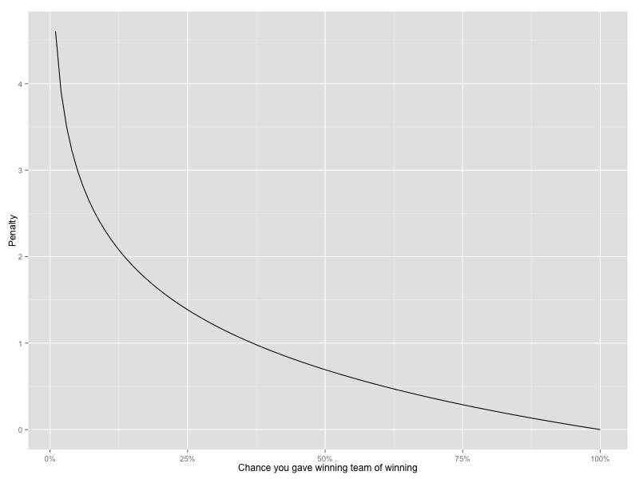

<h2>Scoring</h2>
 <!--png('static/log_loss.png', width=800, height=600)-->
 <!--print(ggplot(df, aes(x=x, y = y)) + geom_line() + scale_x_continuous("Chance you gave winning team of winning", label=percent) + scale_y_continuous("Penalty"))-->
 <!--dev.off()-->


